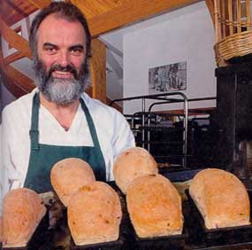
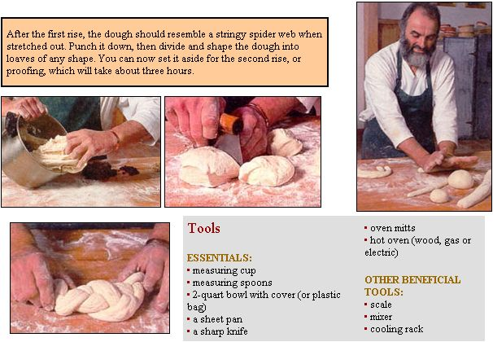
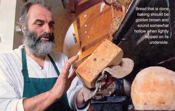
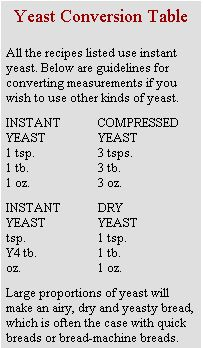
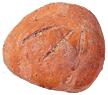
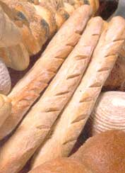
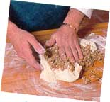
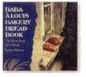

The simple art of baking bread.
Photography by Hubert Schriebl
The second rising doesn't really count as a step - after all, the dough does the work. You can tend your garden, curl up with a book or go for a long walk.
The equipment list is pretty short, too. You need an oven capable of heating up to 475°F (245°C) for at least 20 minutes, a small sheet pan, a bowl with a plastic bag to cover it, and an accurate clock. Most of the other necessary items can be found in any minimally-stocked kitchen (see " Tools "). It's best if your room temperature is a moderate 60 to 70°F but there are ways to compensate for deviations in temperature (see " Breadbaking Tips ").
The following recipe will yield two loaves, about 1 1/2 pounds each, of basic French bread. It's a slightly sour bread with a crisp crust and a chewy interior. Don't let the 12-hour first rise alarm you - if you assemble the dough in the evening and let it sit overnight, the hours go by pretty quickly. After the first rise, you can mix in any number of ingredients for a little variety, but get comfortable with the basic recipe first.
2 lbs. unbleached white flour (6 1/2 cups unsifted)
1 teaspoon instant yeast (or 1 1/2 dry yeast) dissolved in water below
2 cups plus 2 tablespoons warm water (100°F to 120°F)
3 1/2 teaspoons sea salt
Combine all ingredients together in a large bowl and mix with your hands, or use a five-quart mixer with a bread hook attachment. Then, knead for five to ten minutes until smooth and elastic. (You can leave the dough in the bowl while you're knead ing or turn it out onto a light ly floured sur face.) Put dough cover it with a plastic sheet or bag, and let it rise overnight in a warm and still environment.
After the first rise, the dough should resemble a stringy spider web when stretched out. Punch it down, then divide and shape the dough into loaves of any shape. You can now set it aside for the second rise, or proofing, which will take about three hours.
The dough of these sour breads tends to be a little tough, but don't be tempted to add water - the dough will be more malleable after the first rise. It's only after the 12-hour rise that you should be concerned about the dough being too dry. I was once given a recipe that said, "add as much water as is needed," but this is poor advice. What feels right at mixing time won't necessarily be fine for baking 12 hours later.
Keep in mind... the more dense and compact the loaf, the longer it will take to bake.
After the first rise you will find a dough with a shiny surface, sinkholes or craters the size of coins made by the fallen bubbles. If you stretch it out, the dough should resemble a stringy spider web. This signifies a fine, sour-tasting bread. If the dough is still quite tough, this is the time to add water, one tablespoon at a time, mixed in well until the dough looks lively but firm.
After the 12-hour rise, punch down the dough, divide in two, and mold it into whatever shape loaves you desire. Keep in mind, however, the more dense and com pact the loaf, the longer it will take to bake. Place the loaves on a couple of sheet pans that have been oiled or sprinkled with cornmeal (one or the other will suffice, you don't need both oil and corn meal). Then, cover the dough loaves and pans with a plastic bag and let them sit there for a spell. This is the second rising, or proofing, and takes about three hours.
Preheat your oven to 425°F (if your oven is small, you might want to preheat it to 475°F, then lower it to 425°F just before placing loaves inside). Before baking, slice across the tops of the loaves with a sharp knife. This will prevent the loaf from bulging out on the sides. One slice is enough for a round loaf, but if your loaves are long and thin, make several slashes along the length of the loaf.
When you place the loaves in the oven, you might want to throw a couple of tablespoons of water onto a hot surface inside the oven to generate steam, which will improve the appearance and texture of the loaf, making the crust more resilient and satisfyingly crackly. Steam will adhere to the moist, tacky surface of the loaves, which is another reason to keep them covered with plastic during the second rising: If the loaves have developed a tough, dry surface before being placed in the oven, the steam will have little effect.
Variations in loaf shape and volume will make it difficult to predict a precise baking time for this recipe, but it should take about 15 minutes for a classic French bread shape, about 30 for round loaves. Don't stray too far from the kitchen - you'll want to rotate the bread about halfway through to ensure even baking.
Basic Timing
The emphasis of this recipe is on the correct proportions of the ingredients and on the conditions that favor the dough's long rising time.
MIXING AND KNEADING
12-hour rise
SHAPING
3-hour rise
Baking at 475° F (245° C) for about 20 minutes
Once you're comfortable with the basic recipe, you may want to try variations. The basic bread dough lends itself easily to additional ingredients, holding its shape and yielding a
bread with a buoyant texture. An important thing to remember when adding grains is that they must be moist, either soaked or cooked, otherwise they'll absorb moisture from the dough and you'll wind up with an unchewable doorstop rather than a fresh and gratifying treat. You can soak or cook grains during the 12-hour first rise.
Stir 10 tablespoons of water into 1/2 pound (1 2/3cups) of rye flour (preferably coarse or fine rye flour mixed with chopped rye). Allow it to sit for at least an hour. For onion bread, add in 1/2 cup chopped onion. Mix and knead this rye ball with the basic dough (which has already been through the first rising) and immediately shape, rise and bake.
Figure about 15 minutes baking time for a classic long French bread shape about 30 for round loaves.
Add to the basic recipe 1 cup grated cheddar and 1 to 2 tablespoons of black pepper. Then shape, rise and bake.
Mix 1/2 pounds (4 3/4 cups) whole wheat flour with 1 1/2 cups of water. Add 1/2 teaspoon yeast (optional) and 1 cup cooked barley to the basic bread dough. Shape, rise and bake. This tender bread is good for sandwiches. It's also nice with walnuts, which you can add (one cup, chopped) along with the barley.
Combine 8 tablespoons oatmeal, 4 tablespoons bulgar wheat, 6 tablespoons wheat flakes, 4 tablespoons sunflower seeds, 1 tablespoon millet, 2 tablespoons molasses and 7 tablespoons of water. Soak. Combine the grain mix with 1 1/4 pounds (4 3/4 cups) of whole wheat flour and 1 1/2 cups water. Now, add the whole mixture to the basic bread: shape, rise and bake.
These recipes and others can be found in TheBaba A Louis Bakery Bread Book: The Secret Book of Bread (Chelsea Green, 1993), named for McLure's bakery in Chester, Vermont. The book is available through MOTHER'SBookshelf at (800) 888-9098 for $13.95. Just ask for book #MEB299. And don't forget to ask for MOTHER'S own Living on Less guide for $19.95 (MEB250).
Related info:
Breadbaking Tips to Live By
|
 Figure about 15 minutes baking time for a classic long French bread shape about 30 for round loaves. |
|
 |
|
 |
 |
 |
|
 |
 |
 |